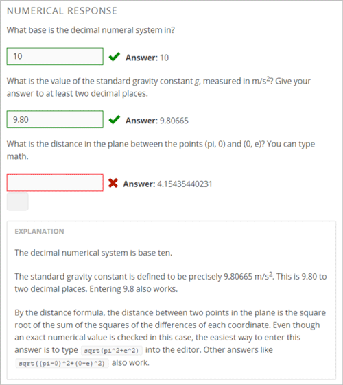
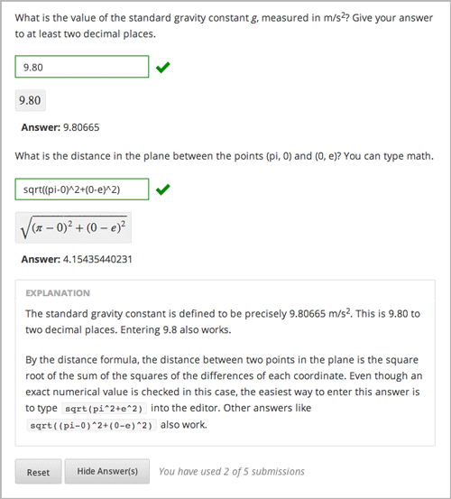

6.24. 数值输入问题¶
在数值输入问题中，学习者输入数字或特殊但相对简单的属性表达式去回答一个问题.这个学习者输入的文本会转化成符号表达式出现在回答区域的下方.
数值输入问题的答案可以包含整数,分数和常数(比如π被g).回答也可以包含表示函数的文本，比如平方根(sqrt)和2的自然对数(log2),以及三角函数和他们的反函数,学习者可以输入文本转换为数学符号.下面的例子就是一个学习者输入的回答和数值表达式的结果.

更多关于学习者输入表达式的信息请查看`Math Response Formatting for Students`_.
你可以指定一个正确的边缘或范围,对于 这些问题的答案,以便学习者的答案不必要十分确切。你也可以明确指定一个正确答案或者使用Python脚本。
对于更多在你课程中的数值输入问题，你可以使用edX Insights查看学习者输入的数据和考试提交的答案的统计。更多相关信息，请查看`Using edX Insights`_.
6.24.1. 创建一个数值输入问题¶
你一个在简单编辑器或高级编辑器中创建一个数值输入问题.
- 如果你的问题文本不包含任何斜体、粗体格,或是特殊的字符。你则可以在简单编辑器中创建这个问题。
- 如果你的问题包含特殊字体和字符，或者你的问题包含Python脚本，你可以使用高级编辑器。
比如以下的问题就需要使用高级编辑器.
对于更多关于在你问题中使用Python脚本的信息，请查看:ref:Write Your Own Grader.
6.24.1.1. 使用简单编辑器创建一个数值输入问题¶
要使用:ref:`简单编辑器<简单编辑器>`创建一个数值输入问,有以下的步骤.
- 在你想要创建问题的单元,在*添加新组件**下方，选择**问题**.
- 从**普通问题组件**中,选择**数值输入问题**.
- 选择**编辑**.简单编辑器就打开了.
- 用你自己的文本替代示例问题文本.
- 确定你想要学生回答的问题的描述文本,并且用两对尖角括号围住你的问题(
>>问题<<).这个问题文本就是这个问题的链接。 - 要指定这个问题的答案,选择答案文本然后选择 Numerical Input from the toolbar. An equals sign appears next to the answer.
- 可选择的,指定一个正确答案的边缘,或者误差范围.你可以指定一个百分率，数值或者范围。
- 要指定正确的答案的容错百分比，可以在答案后面添加**+-{数字}%**. 比如,要包含2%的容错范围,添加**+-2%**.
- http://oimagea2.ydstatic.com/image?url=http://www.filtersfast.com/ProdImages/150578bracket.jpg&product=PICDICT_EDIT
- 要指定正确答案的误差范围,在答案后面添加**+-{数字}**.比如,要包括5的容错值,添加**+-5**.
- 要指定一个范围,你需要提供开始和结束的值并且用逗号分隔开然后用中括号[]或者小括号住这个范围.一个括号括住这个数字在这个范围旁边，另一个括号不括住这个数字.比如，你指定**[5,8)**,正确答案可以是5, 6,和7,但是不包括8. 如果你指定**(5, 8]**,正确答案可以使6, 7,和8,但是不能是5.
{kind=link}
- 要提供一个解释,选择解释文本然后从工具栏选择**解释**. ``[explanation]``就出现在解释文本的前面和后面.
- 选择**设置**并且提供一个这个问题的**展示名字**.
- 为这个问题定义其他的设置.更多信息,请看:ref:问题设置.
- 选择**保存**.
对于第一个示例问题,下面是一个问题组件实现的示例.
>>What base is the decimal numeral system in?<<
= 10
[explanation]
The decimal numeral system is base ten.
[explanation]
6.24.1.2. 使用高级编辑器创建一个数值输入问题¶
对于一个更复杂的问题,比如下面描述的一个，你可以使用高级编辑器.
- 遵循在:ref:`简单编辑器<使用简单编辑器创建一个数值输入问题>`的步骤.
- 选择**高级编辑器**, 然后编辑XML文件添加你想要的标签和属性。下面是一个示.
问题代码:
<problem>
<p><b>Example Problem</b></p>
<p>What base is the decimal numeral system in?
<numericalresponse answer="10">
<formulaequationinput label="What base is the decimal numeral system in?"/>
</numericalresponse>
</p>
<p>What is the value of the standard gravity constant <i>g</i>, measured in m/s<sup>2</sup>? Give your answer to at least two decimal places.
<numericalresponse answer="9.80665">
<responseparam type="tolerance" default="0.01" />
<formulaequationinput label="Give your answer to at least two decimal places"/>
</numericalresponse>
</p>
<!-- The following lines use Python script spacing. Make sure it is not indented when you add it to the problem component. -->
<script type="loncapa/python">
computed_response = math.sqrt(math.fsum([math.pow(math.pi,2), math.pow(math.e,2)]))
</script>
<p>What is the distance in the plane between the points (pi, 0) and (0, e)? You can type math.
<numericalresponse answer="$computed_response">
<responseparam type="tolerance" default="0.0001" />
<formulaequationinput label="What is the distance in the plane between the points (pi, 0) and (0, e)?"/>
</numericalresponse>
</p>
<solution>
<div class="detailed-solution">
<p>Explanation</p>
<p>The decimal numerical system is base ten.</p>
<p>The standard gravity constant is defined to be precisely 9.80665 m/s<sup>2</sup>.
This is 9.80 to two decimal places. Entering 9.8 also works.</p>
<p>By the distance formula, the distance between two points in the plane is
the square root of the sum of the squares of the differences of each coordinate.
Even though an exact numerical value is checked in this case, the
easiest way to enter this answer is to type
<code>sqrt(pi^2+e^2)</code> into the editor.
Other answers like <code>sqrt((pi-0)^2+(0-e)^2)</code> also work.
</p>
</div>
</solution>
</problem>
6.24.2. XML数值输入问题¶
6.24.2.1. 模板¶
下面的模板代表问题没有或者有百分率的容错率.
6.24.2.1.1. 没有容错率的问题¶
<problem>
<p>TEXT OF PROBLEM
<numericalresponse answer="ANSWER (NUMBER)">
<formulaequationinput label="TEXT OF PROBLEM"/>
</numericalresponse>
</p>
<solution>
<div class="detailed-solution">
<p>TEXT OF SOLUTION</p>
</div>
</solution>
</problem>
6.24.2.1.2. 带有小数容错率的问题¶
<problem>
<p>TEXT OF PROBLEM
<numericalresponse answer="ANSWER (NUMBER)">
<responseparam type="tolerance" default="NUMBER (DECIMAL, e.g., .02)" />
<formulaequationinput label="TEXT OF PROBLEM"/>
</numericalresponse>
</p>
<solution>
<div class="detailed-solution">
<p>TEXT OF SOLUTION</p>
</div>
</solution>
</problem>
6.24.2.1.3. 带有百分比容错率的问题¶
<problem>
<p>TEXT OF PROBLEM
<numericalresponse answer="ANSWER (NUMBER)">
<responseparam type="tolerance" default="NUMBER (PERCENTAGE, e.g., 3%)" />
<formulaequationinput label="TEXT OF PROBLEM"/>
</numericalresponse>
</p>
<solution>
<div class="detailed-solution">
<p>TEXT OF SOLUTION</p>
</div>
</solution>
</problem>
6.24.2.1.4. 用Script创建的问题¶
<problem>
<!-- The following lines use Python script spacing. Make sure it is not indented when you add it to the problem component. -->
<script type="loncapa/python">
computed_response = math.sqrt(math.fsum([math.pow(math.pi,2), math.pow(math.e,2)]))
</script>
<p>TEXT OF PROBLEM
<numericalresponse answer="$computed_response">
<responseparam type="tolerance" default="0.0001" />
<formulaequationinput label="TEXT OF PROBLEM"/>
</numericalresponse>
</p>
<solution>
<div class="detailed-solution">
<p>TEXT OF SOLUTION</p>
</div>
</solution>
</problem>
6.24.2.2. 标签¶
<numericalresponse>(必选):指定这个问题是一个数值输入问题.<formulaequationinput />(必选): 提供一个回答区域供学生输入答案.<responseparam>(可选): 对于答案指定一个容错率，或者错误的边缘.<script>(可选)
Note
一些老的问题使用 ``<textline math=”1” />``标签而不是``<formulaequationinput />``标签.然而,``<textline math=”1” />``标签已经被弃用了所有的新问题都是使用``<formulaequationinput />``标签.
标签: <numericalresponse>
指定这个问题是一个数值输入问题.``<numericalresponse>``标签和``<formularesponse>``类似,但是``<numericalresponse>``标签不允许使用未定义的变量.
属性
属性 描述 答案 (必选) 这个问题的正确答案,使用一个数学表达式给出. Note
如果在一个问题中在美元符号前包含了一个变量名($),你可以在问题中包含一个脚本计算该变量的表达式。
评分器用同一种方式评估你提供的答案和学生回答的.评分器也自动简化任何你或者你学生提供的数字表达式或者.答案可是包含简单的表达式比如”0.3”和”42”,或者更多复杂的表达式比如”1/3”和”sin(pi/5)”.
子标签
<responseparam><formulaequationinput>
标签: <formulaequationinput>
- 在LMS里创建一个回答区域。
属性
属性 描述 label (必选) 指定这个回答区域的名字。 size (可选) 定义LMS里回答区域的答案字符大小. 子标签
(无)
标签: <responseparam>
指定一个一个答案容错率，或者错误的范围。
属性
属性 描述 类型 (可选) “tolerance”: 对于一个答案定义一个容错率. 其他 (可选) 指定一个小数或者百分比的容错. 子标签
(无)
标签: <script>
指定一个脚本对学生的回答进行评分.一个问行为好像所有的代码在所有脚本用单独的脚本标签. 特别的, 所有的用在多脚本的变量标签共享一个命名空间并且可以被重载.
和Python一样, 要注意缩进问题, 即使代码是被嵌在XML文件中的.
属性
属性 描述 type (必选) Must be set to “loncapa/python”. 子标签
(无)